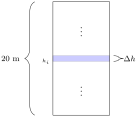
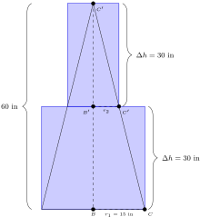
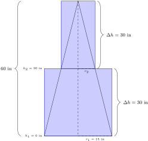
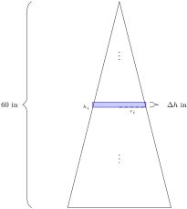
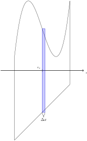
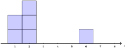
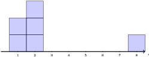

Set up integrals to solve problems involving density, mass, and center of mass.
Subsection6.5.1Activities
Activity6.5.1.
Consider a rectangular prism with a 10 meters \(\times\) 10 meters square base and height 20 meters. Suppose the density of the material in the prism increases with height, following the function \(\delta(h)=10+h\) kg/m\(^3\text{,}\) where \(h\) is the height in meters.
(a)
If one were to cut this prism, parallel to the base, into 4 pieces with height 5 meters, what would the volume of each piece be?
(b)
Consider the piece sitting on top of the slice made at height \(h=5\text{.}\) Using a density of \(\delta(5)=15\) kg/m\(^3\text{,}\) and the volume you found in (a), estimate the mass of this piece.
Suppose now that we slice the prism from Activity 6.5.1 into slices of height \(\Delta h\) meters.

Figure139.\(10\times 10\times 20\) prism sliced into many pieces.
(a)
Consider the piece sitting atop the slice made at height \(h_i\text{.}\) Using \(\delta(h_i)=10+h_i\) as the estimate for the density of this piece, what is the mass of this piece?
\(\displaystyle (10+h)100\cdot h_i\)
\(\displaystyle (10+\Delta h)100\cdot h_i\)
\(\displaystyle (10+h_i)100\cdot \Delta h\)
\(\displaystyle (10+h_i)100\cdot h\)
Activity6.5.6.
Consider a cylindrical cone with a base radius of 15 inches and a height of 60 inches. Suppose the density of the cone is \(\delta(h)= 15+\sqrt{h}\) oz/in\(^3\text{.}\)

Figure140.15\(\times\) 60 cylindrical cone sliced into two pieces.
(a)
Let \(r_2\) be the radius of the circular cross section of the cone, made at height 30 inches. Recall that \(\Delta ABC, \Delta AB'C'\) are similar triangles, what is \(r_2\text{?}\)
15 inches.
7.5 inches.
30 inches.
60 inches.
(b)
What is the volume of a cylinder with radius \(r_1=15\) inches and height \(30\) inches?
(c)
What is the volume of a cylinder with radius \(r_2\) inches and height \(30\) inches?
Activity6.5.7.
Suppose that we estimate the mass of the cone from Activity 6.5.6 with 2 cylinders of height 30 inches.

Figure141.15\(\times\) 60 cylindrical cone sliced into two pieces.
Suppose that we estimate the mass of the cone from Activity 6.5.6 with 3 cylinders of height 20 inches. Figure142.15\(\times\) 60 cylindrical cone sliced into three pieces.
Suppose that we estimate the mass of the cone from Activity 6.5.6 with cylinders of height \(\Delta h\text{.}\)

Figure143.15\(\times\) 60 cylindrical cone sliced into many pieces.
(a)
Consider the piece sitting atop the slice made at height \(h_i\text{.}\) Using \(\delta(h_i)=15+\sqrt{h_i}\) as the estimate for the density of this cylinder, what is the mass of this cylinder?
Consider a solid where the cross section of the solid at \(x=x_i\) has area \(A(x_i)\text{,}\) and the density when \(x=x_i\) is \(\delta(x_i)\text{.}\)

Figure144.Solid approximated with prisms of width \(\Delta x\text{.}\)
(a)
If we used prisms of width \(\Delta x\) to approximate this solid, what is the mass of the slice associated with \(x_i?\)
\(\displaystyle A(x)\delta(x)\Delta x\)
\(\displaystyle \pi A(x)^2\delta(x_i)\Delta x\)
\(\displaystyle A(x_i)\delta(x_i)\Delta x\)
\(\displaystyle A(x_i)\delta(x_i)\Delta x_i\)
Fact6.5.11.
Consider a solid where the cross section of the solid at \(x=x_i\) has area \(A(x_i)\text{,}\) and the density when \(x=x_i\) is \(\delta(x_i)\text{.}\) Suppose the interval \([a,b]\) represents the \(x\) values of this solid. If one slices the solid into \(n\) pieces of width \(\Delta x=\frac{b-a}{n}\text{,}\) then one can approximate the mass of the solid by
Consider that for the prism from Activity 6.5.1, a cross section of height \(h\) is \(A(h)=10^2=100\) m\(^2\text{.}\) Also recall that the density of the prism is \(\delta(h)=10+h\) kg/m\(^3\text{,}\) where \(h\) is the height in meters.
Consider that for the cone from Activity 6.5.6, a cross section of height \(h\) is \(A(h)=\pi r^2\) in\(^2\text{,}\) where \(r\) is the radius of the circular cross-section at height \(h\) inches. Also recall that the density of the cone is \(\delta(h)=15+\sqrt{h}\) oz/in\(^3\text{,}\) where \(h\) is the height in inches.
(a)
When the height is \(h\) inches, what is \(r\text{?}\)
Consider a pyramid with a \(8\times 8\) ft square base and a height of 16 feet. Suppose the density of the pyramid is \(\delta(h)=10+\cos(\pi h)\) lb/ft\(^3\) where \(h\) is the height in feet.
(a)
When the height is \(h\) feet, what is the area of the square cross section at that height, \(A(h)\text{?}\)
Consider a board sitting atop the \(x\)-axis with six \(1\times 1\) blocks each weighing 1 kg placed upon it in the following way: two blocks are atop the 1, three blocks are atop the 2, and one block is atop the 6.

Figure149.Six 1 kg blocks atop the \(x\)-axis.
Which of the following describes the \(x\)-value of the center of gravity of the board with the blocks?
Consider a board sitting atop the \(x\)-axis with six \(1\times 1\) blocks each weighing 1 kg placed upon it in the following way: two blocks are atop the 1, three blocks are atop the 2, and one block is atop the 8.

Figure150.Six 1 kg blocks atop the \(x\)-axis.
Find the \(x\)-value of the center of gravity of the board with the blocks.
Fact6.5.17.
Consider a solid where the cross section of the solid at \(x=x_i\) has area \(A(x_i)\text{,}\) and the density when \(x=x_i\) is \(\delta(x_i)\text{.}\) Suppose the interval \([a,b]\) represents the \(x\) values of this solid. Since each slice has approximate mass \(\delta(x_i)A(x_i)\delta(x_i)\text{,}\) we can approximate the center of mass by taking the weighted “average” of the \(x_i\)-values weighted by the associated mass:
Consider that for the prism from Activity 6.5.12, a cross section of height \(h\) is \(A(h)=10^2=100\) m\(^2\text{.}\) Also recall that the density of the prism is \(\delta(h)=10+h\) kg/m\(^3\text{,}\) where \(h\) is the height in meters, and that we found the total mass to be 40000 kg.
Use Fact 6.5.17 to find the height where the center of mass occurs.
Activity6.5.19.
Consider that for the prism from Activity 6.5.13, a cross section of height \(h\) is \(A(h)=\pi\cdot \left( \frac{60-h}{4}\right)^2\) in\(^2\text{.}\) Also recall that the density of the cone is \(\delta(h)=15+\sqrt{h}\) oz/in\(^3\text{,}\) where \(h\) is the height in inches, and that we found the total mass to be about 142492.6 oz.
Use Fact 6.5.17 to find the height where the center of mass occurs.
Activity6.5.20.
Consider that for the pyramid from Activity 6.5.14, a cross section of height \(h\) is \(A(h)=\pi\cdot \left( \frac{16-h}{2}\right)^2\) ft\(^2\text{.}\) Also recall that the density of the pyramid is \(\delta(h)=10+\cos{\pi h}\) lb/feet\(^3\text{,}\) where \(h\) is the height in feet, and that we found the total mass to be about 3414.14.6 lbs.
Use Fact 6.5.17 to find the height where the center of mass occurs.
Subsection6.5.2Videos
Figure153.Video: Set up integrals to solve problems involving density, mass, and center of mass